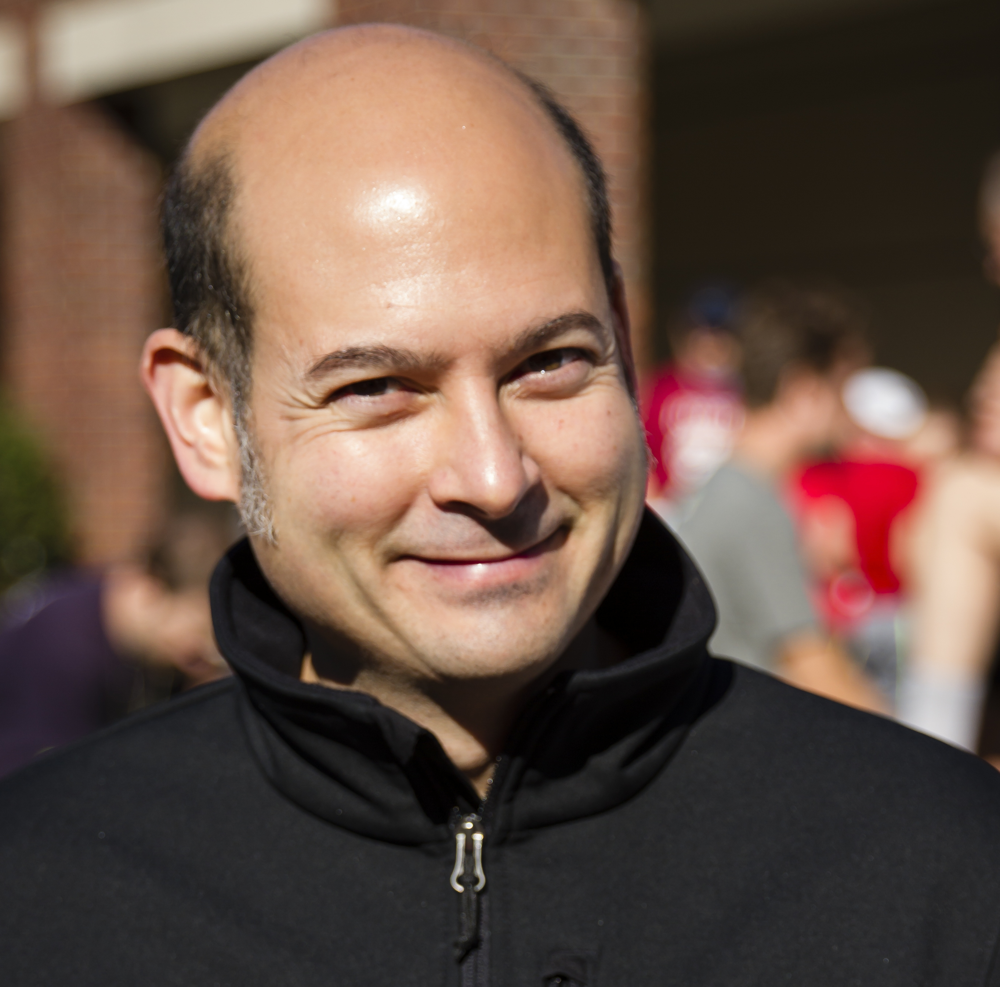

Todd Pangilinan
About me
After a successful career in collegiate events, I've decided to take a bit of a left-turn in my career and pursue work in the tech industry. I'm leaning into some of the skills I honed as an event coordinator- problem solving, collaboration, and project management- and merging it with some of my intersts outside of work- tinkering/fixing things, following technology, and learning new things. My goals at epicodus are:
- Learn how to think like a programmer.
- Get familiar with several basic languages/technologies (HTML, CSS, Javascript, React, Ruby).
- Have fun practicing concepts and building things.
- Get a job in the tech field!
My background
- Located in Portland, OR (although original from the midwest)
- Extensive background in large-scale events and higher education
- I have worked for University of Iowa, Portland State Univeristy, and most recently Reed College.
- Directed capstone events for colleges and universities (Commencement, Reunions, Orientation)
- Managed large, multiple-day conferences
- collaborated with internal partners and external vendors- while maintaining budget and focus on the event deliverables/goals.
- Intersted in technology and tinkering with things
- Hobbies include:
-
- bicycles and biking
- attempting to fix things around the house and garage
- running (ok, more like jogging if looking at speed)
- being efficent/thrify
Here is a sampling of some of my projects
basic website, practicing bootstrap. Languages used: CSS, html.
basic website using html and CSS.
basic website practicing float using html and CSS.
basic website practicing float using html and CSS.